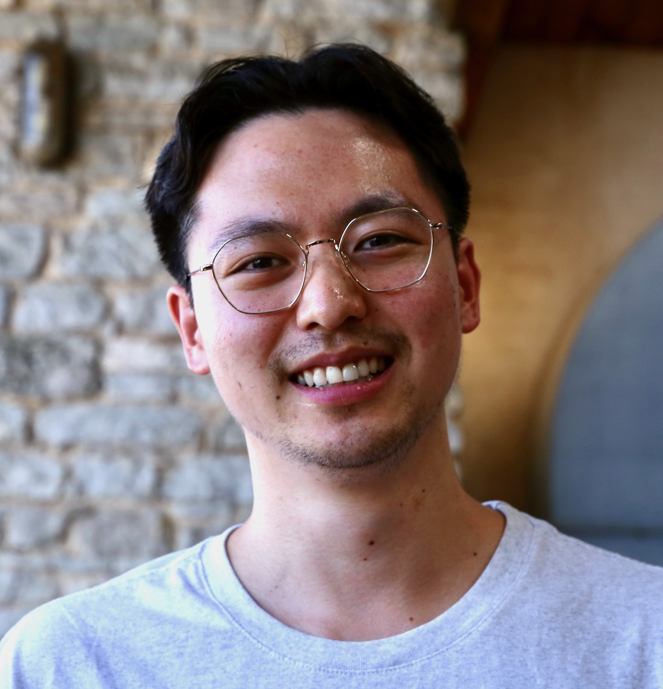

About
Atomistic simulations · Machine learning · Enhanced sampling

I got my PhD in Biophysics from a joint program at the University of Pittsburgh and Carnegie Mellon University with Lillian Chong and Angela Gronenborn. My thesis focused on studying protein conformational dynamics using enhanced sampling methods, such as weighted ensemble molecular dynamics simulations, and experimental techniques, such as NMR spectroscopy.
Along the way, I developed force field parameters for all-atom simulations of fluorinated amino acids, a machine learning method for automated selection of progess coordinates during weighted ensemble simulations, and a software package for data visualization of large-scale simulations.
See my research page for an overview of some of this work.
Education
2019-2024 PhD, Biophysics, University of Pittsburgh & Carnegie Mellon University
2014-2018 B.Sc. Chemistry, University of Delaware